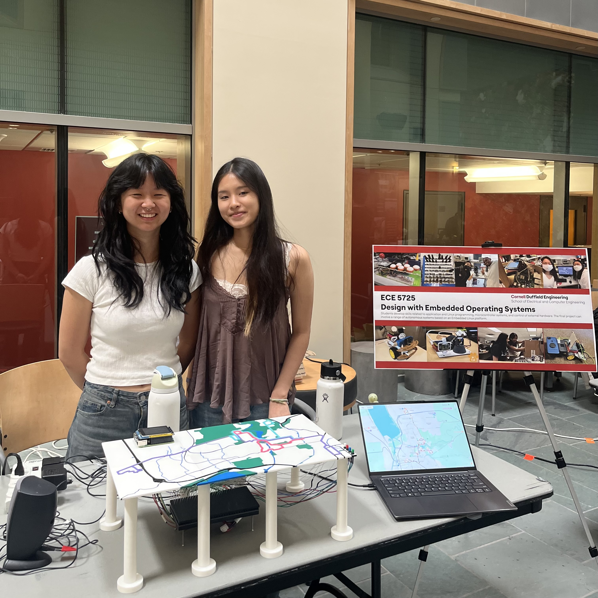

Embedded Linux · Physical Computing · Transit Data
A physical transit display driven by live TCAT data.
Big Red Routes combines a Raspberry Pi 4, a 32×16 RGB matrix, 89 fiber-optic endpoints, a PiTFT, GPIO controls, and TCAT data into an interactive 3D-printed map of Cornell and Ithaca transit routes.

30 · 81 · 92
& fiber paths
pixel field
poll interval
Project brief
Built around a real physical interface.
Big Red Routes is an interactive TCAT (Tompkins Consolidated Area Transit) bus tracker for the Cornell and Ithaca community. The system visualizes selected live bus positions on a physical, 3D-printed map rather than a conventional screen-only map. The initial concept was inspired by a Manhattan subway-map project.
The 12 × 21 inch Ithaca map was hand-traced in Figma as vectors, exported as SVG, then imported into Fusion for extrusion, color treatment, and fabrication. It was printed as six puzzle-like pieces and elevated by eight printed pillars to make room for an LED matrix, electrical wiring, and fiber optics below the map surface.
At startup, active buses on Routes 30, 81, and 92 are shown. Users can either track a selected route or choose a start and end stop for a direction-aware trip path; a window quit event stops the program. The project was completed for the final project in Cornell’s ECE 5725 Design with Embedded Operating Systems course, which centers embedded Linux systems and target-device debugging.
System demonstration
See the complete hardware/software system in operation.
The demonstration shows the physical map, PiTFT interface, and integrated transit display.
System architecture
Independent loops connect live data to a physical map.
Network polling, physical input, display rendering, LED updates, and spoken announcements are separated so slower work does not block interaction.
Inputs
TCAT static GTFSstops · trips · stop_times
GTFS-Realtime feedlive vehicle positions
Route 92 JSONLfallback replay snapshots
4 GPIO buttonsphysical controls
Application core
tcat_api.pyparse and normalize transit data
bus_tracker.pypoll, reconcile state, and dispatch updates
screen command queue
LED command queue
route_data.pystop-to-pixel and transfer model
find_a_route.pydirection-aware graph search
Physical outputs
32×16 RGB matrixlock-protected pixel redraw
89 fiber-optic endpoints3D-printed map display
PiTFT + Pygamemenu and bus details
Audio workerqueued
espeak announcementsData contract
(route_id, stop_id) keys map a vehicle’s current stop to its name and a physical matrix coordinate.
Concurrency boundary
GPIO publishes commands to separate LED and screen queues; the matrix uses a threading.Lock and the GUI copies a protected snapshot.
Fallback behavior
When Route 92 is selected but absent from the live feed, replay records are translated into the same bus shape used by the live path.
Hardware integration
A fabricated map with an embedded display stack underneath.
The Raspberry Pi and PiTFT sit at one corner of the map; the elevated structure routes light and wiring beneath the printed surface.


Why this hardware approach
The 16×32 Adafruit LED matrix provided a cleaner alternative to using tens of individual LEDs. Each of the 89 stops uses a 1 mm fiber-optic cable to transfer a matrix pixel’s light to a map hole. A 5 mm tall printed board with 1 mm holes holds the fiber ends over the matrix.
Four external colored buttons were added because the matrix uses GPIO pins that conflict with the Raspberry Pi’s built-in buttons. The color-coded controls also make the interaction model more legible. The speaker announces the bus number, direction, and stop name when a bus moves to a new stop on the route being viewed.
Green light denotes outbound travel (north to south); red denotes inbound travel (south to north).
Integrated components
- Raspberry Pi 4
- 16×32 Adafruit RGB LED matrix
- PiTFT 2.8 inch display
- Four external GPIO buttons
- Speaker
- 89 × 1 mm fiber-optic cables
- 3D-printed six-piece map and eight pillars
Raspberry Pi to LED matrix wiring
| GPIO pin | Matrix pin | Signal |
|---|---|---|
| 5 | 1 | Red 1 |
| 13 | 2 | Green 1 |
| 6 | 3 | Blue 1 |
| 12 | 5 | Red 2 |
| 16 | 6 | Green 2 |
| 23 | 7 | Blue 2 |
| 22 | 9 | Line Selection A |
| 26 | 10 | Line Selection B |
| 27 | 11 | Line Selection C |
| 20 | 12 | Line Selection D |
| 17 | 13 | CLK |
| 21 | 14 | Latch |
| 4 | 15 | Output Enable |
| GND | 4, 8, 16 | GND |
Button wiring
| Button | GPIO pin |
|---|---|
| White — select / back | 18 |
| Green — mode / Route 30 / next | 14 |
| Blue — Route 81 / previous | 19 |
| Red — Route 92 / inbound | 15 |
Embedded software
From vehicle feeds to pixels, menus, and audio.
The codebase separates data acquisition, map modeling, I/O, rendering, and trip selection into focused modules. The project documentation records Raspberry Pi OS kernel 6.1.21-v8+ #1642 SMP PREEMPT on the target system.
TCAT data pipeline
load_gtfs_static_data() downloads and parses GTFS stops.txt, trips.txt, and stop_times.txt. fetch_vehicle_feed() parses live vehicle positions and filters the target routes.
Matrix controller
BusLEDMatrix configures the Adafruit HAT mapping, RGB sequence, PWM, brightness, and GPIO slowdown. An active_pixels dictionary and lock coordinate redraws through SwapOnVSync.
Physical UI
The Pygame PiTFT interface renders the home, route selection, trip finder, stop picker, selected-trip summary, and live bus-detail screens. GPIO logic owns button state and sends display commands through a queue.
Spoken updates
AudioAnnouncer places route, bus, stop, and direction messages on a Python queue. A background thread invokes espeak sequentially so announcements do not freeze the main interaction paths.
Trip graph
Directional stop lists become nodes; route sequence is represented by ride edges and permitted transfers by transfer edges. The search prioritizes fewest transfers, then fewer ride steps and path length.
Route 92 fallback
Recorded Route 92 snapshots are loaded from JSONL, randomized at startup, looped, and reshaped to match the live-feed bus record when no Route 92 bus is returned.
Live transit acquisition and state handoff
The program starts by building static trip, route, and direction maps. The poll loop runs every 10 seconds, selects the active route set, fetches TCAT vehicle positions, optionally augments Route 92 with recorded data, updates a lock-protected GUI snapshot, and builds a displayable bus snapshot only for stops that have matrix coordinates.
normalize_direction() accounts for route-specific direction labels before selecting the red or green LED indication. The PiTFT retrieves a copied route snapshot so it can show bus status, last stop, destination, direction, and occupancy while the poll loop continues updating state.
Button controls and PiTFT screens
The white button selects or returns home. The green, blue, and red buttons select routes or navigate stops depending on the current screen. On the route screen, green selects/cycles Route 30 buses, blue selects Route 81, and red selects Route 92. In trip-finder mode, green starts outbound selection and red starts inbound selection; green and blue scroll forward/backward through stops, accelerating when held.
The PiTFT runs Pygame against the framebuffer and redraws when the selected bus, route snapshot, screen state, mode, or trip-selection state changes. It preserves a valid selected bus as live data changes.
Route selection algorithm
find_a_route.py creates a graph from the ordered inbound or outbound stop lists. It only adds transfer edges from TRANSFER_STOP_LOOKUP, so transfers are constrained to authored valid stops and direction. Recursive backtracking evaluates every reachable candidate without revisiting a node; the lowest score is returned as route segments and matrix pixels.
When a user locks a start and end selection, the LED queue highlights the current stop, retains selected stops, and then lights the selected route segments on the physical map.
Validation and iteration
The final system followed hardware-first and integration testing.
Fabrication tests
Small printed pieces with different hole sizes were used to evaluate fiber-optic fit. The team compared holes designed in Figma with holes made in Fusion after discovering that their pixel- and millimeter-based sizing behaved differently.
Matrix isolation
Independent online matrix test code was used to check wiring and GPIO when the panel blinked, flashed, or did not operate. This isolated the failure to the LED matrix rather than application code, so the panel was replaced.
Software and interaction checks
PiTFT code from a previous Lab 3 exercise was integrated alongside the matrix. Print statements were used to inspect TCAT records, button detection, PiTFT updates, thread execution, and audio. Many start/end combinations were exercised to validate transfers and reveal missing directional-stop data.
Full-system and power-up test
The team ran the Raspberry Pi, PiTFT, LED matrix, buttons, TCAT polling, and audio together. They then tested startup through a .bashrc invocation of main.py and Raspberry Pi Console Autologin.
Input tradeoff
The touchscreen was not responsive enough for the intended interaction, so physical GPIO buttons became the more reliable control path.
Data availability tradeoff
Route 92 does not always have live data during the day. Recorded data maintains a demonstrable Route 92 path when its live feed is empty.
Mapping tradeoff
Hand-authored dictionaries make the physical coordinate model explicit, but required targeted tests and corrections for inbound, outbound, and transfer cases.

PiTFT home screen for route display and trip planning.
Result
A working physical display that joined the hardware and software pieces.
The final system displayed real-time TCAT information on the 3D-printed map for the selected routes. It added GPIO controls, a Find a Route mode, and audio announcements to the original tracking concept. The data is refreshed on the configured 10-second interval, while the button loop checks input frequently with debounce delays.
The Pi, PiTFT, matrix, buttons, fiber optics, and speaker were integrated into one assembly. Organizing the program into separate files for GUI, LED matrix, bus tracking, buttons, audio, and route data made the system easier to manage than a single monolithic program. The main change during development was the selected routes; the project’s physical transit-display purpose remained the same.
Future work
Known next steps, not unclaimed features.
Expand the network model
Add more TCAT routes, then revisit the current list-of-dictionaries data model with more structured bus data abstractions.
Make the map easier to read
Add labels for major Cornell buildings, Collegetown, the Commons, and other locations so the physical map is easier to interpret without prior stop-name familiarity.
Use live data in trip planning
Extend Find a Route with estimated arrivals, nearby vehicle context, and walking-versus-waiting information rather than only showing a possible route path.
Refine the PiTFT experience
Use fewer words, clearer menus, and visual icons; improve the announcement voice to make the existing physical-button interface and audio output easier to use.
Build record
Components and project references.

Team
Collaborative design across software, hardware, and fabrication.
Both team members contributed to the design, hardware, software, testing, and integration of Big Red Routes. Selena traced the map vectors and created the SVG file. Helen imported the design into Fusion, extruded the map, and prepared the parts for 3D printing.
The remainder was completed collaboratively: wiring the LED matrix, buttons, speaker, Raspberry Pi, and PiTFT; testing fiber-optic light transfer; assembling the map; organizing the code; connecting TCAT data to the LED matrix; building the interface; implementing GPIO controls and audio; and developing Find a Route. The team debugged touchscreen behavior, Route 92 data limitations, route-data issues, and hardware/software integration together.